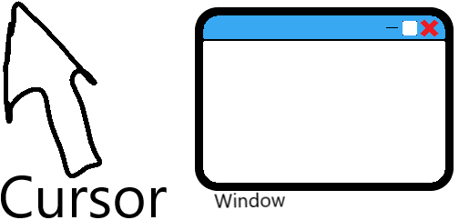

Do-Soft | Do your soft job
Welcome!
Welcome to the Do-Soft website! Love it? Well, that's cool.
Do you want to make Do-Soft good enough? Please contribute.
Prototype?
Here are 2 prototypes here:
Why is Do-Soft open-source?
Who loves open source? The first reason is so you can make variants of it. But I know that...
Another reason is to let people contribute to it. That's why I choose open-source.
Why Do-Soft?
Do-Soft is based on other OSes, like Windows. But it also focuses on its own. If you were during the early stage of do-soft, you'll be lucky to have some code lying around.

This has 2 pharagraphs
Pharagraph 2
Pharagraph 3
How did it came here?
I don't even know.
It came here for you. Luck. 😜
What is Do-Soft about?
Tablespoon Please.
Have you even read the description?
It reads "An open-source OS." Get it? 😰
Can i collaborate this freaking website?
Well, you sure can; you must have knowledge of C, Computers, and C comments 😅